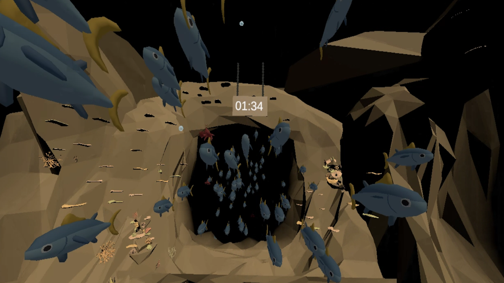
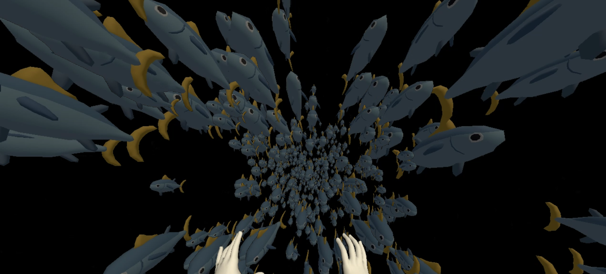
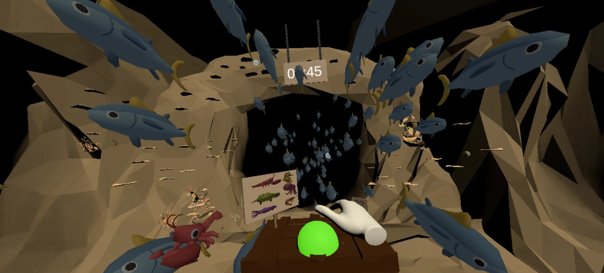

Shoal of Fish
Developed for H'ability, this VR game assists in vestibular system rehabilitation for patients with inner ear issues. The patient is immersed at the center of a school of fish.
 The main challenge for this exercise was to balance the number of fish required to create a "swarming" effect. It had to be enough to destabilize the patient but not overwhelm the headset’s computational power. Managing the number of animated fish models in the scene required optimization.
I employed several techniques to optimize performance, despite the high number of different animated fish models coexisting. The game was further adapted to allow healthcare professionals to adjust the swarm's density, direction, and speed during the session, ensuring flexibility in the exercise.
Finally, the gameplay aspect involved the player needing to count the different types of fish that appeared throughout the session, adding a layer of interaction to the therapeutic experience.